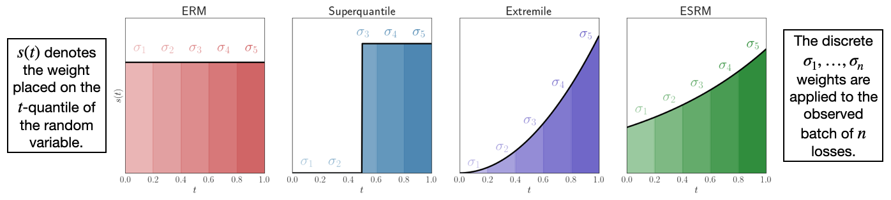

Deshift#
This library is built to perform distributionally robust optimization (DRO) within existing PyTorch workflows with a single additional line of code. The focus is on spectral risk measure-based learning which is described in detail in this AISTATS 2023 paper and this ICLR 2024 paper (Spotlight Presentation). Distributionally robust objectives apply a sample reweighting to the observed training data within each mini-batch in order to robustify models against distribution shifts that occur at test time. The main features are:
Implementations of the superquantile/conditional value-at-risk (CVaR), extremile, and exponential spectral risk measures.
Implementations of the pool adjacent violators (PAV) algorithm for computing regularized spectral risk measures with Kullback-Leibler and Chi-Squared divergences.
The main idea of the method is to define a spectrum, which governs the most skewed distribution the user expects on the test distribution (as compared to the uniform distribution of the training data observed at train time). Here are various examples of common spectra observed in the literature:
{kind=link}
The following is a guide to the main features of the package.
Installation#
Once you have installed PyTorch >=1.6. (see instructions), you can install Deshift by running
$ git clone git@github.com:ronakdm/drtorch.git
$ cd deshift
$ pip install -e .
Quickstart#
First, we construct a function that inputs a vector of losses and returns a probability distribution over elements in this loss vector.
>>> from deshift import make_spectral_risk_measure, make_superquantile_spectrum
>>> spectrum = make_superquantile_spectrum(batch_size, 2.0)
>>> compute_sample_weight = make_spectral_risk_measure(spectrum, penalty="chi2", shift_cost=1.0)
Assume that we have computed a vector of losses based on a model output in PyTorch. We can then use the function above and back propagate through the weighted sum of losses.
>>> x, y = get_batch()
>>> logits = model(x)
>>> losses = torch.nn.functional.cross_entropy(logits, y, reduction="none")
>>> with torch.no_grad():
>>> weights = compute_sample_weight(losses.cpu().numpy()).to(device)
>>> loss = weights @ losses
>>> loss.backward()
A detailed quickstart guide is given in docs/source/quicstart.ipynb, whereas an example training on Fashion MNIST is given in examples/train_fashion_mnist.ipynb.
Contributing#
If you find any bugs, please raise an issue on GitHub. If you would like to contribute, please submit a pull request. We encourage and highly value community contributions.
Cite#
If you find this package useful, or you use it in your research, please cite:
@inproceedings{mehta2023stochastic,
title={{Stochastic Optimization for Spectral Risk Measures}},
author={Mehta, Ronak and Roulet, Vincent and Pillutla, Krishna and Liu, Lang and Harchaoui, Zaid},
booktitle={International Conference on Artificial Intelligence and Statistics},
pages={10112--10159},
year={2023},
organization={PMLR}
}
Acknowledgements#
This work was supported by NSF DMS-2023166, CCF-2019844, DMS-2134012, NIH, and the Office of the Director of National Intelligence (ODNI)’s IARPA program via 2022-22072200003. Part of this work was done while Zaid Harchaoui was visiting the Simons Institute for the Theory of Computing. The views and conclusions contained herein are those of the authors and should not be interpreted as representing the official views of ODNI, IARPA, or the U.S. Government.